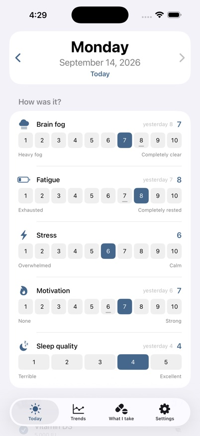
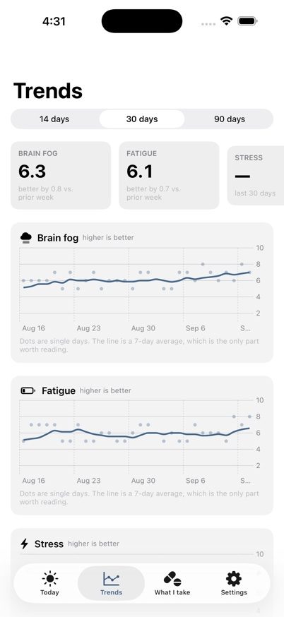
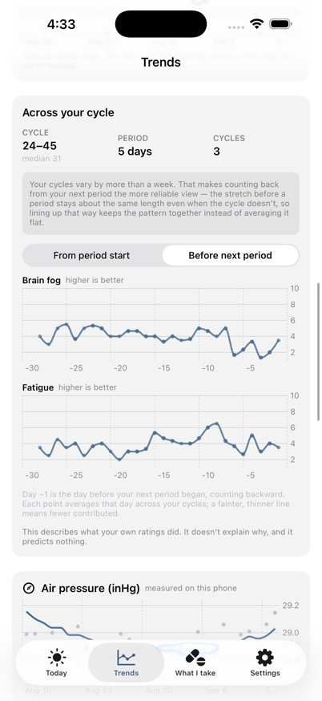

A private daily log for symptoms and the things you take, for iPhone. Fog Log helps you see, over weeks rather than days, whether anything you changed made a difference.
Free · iPhone · iOS 17 or later · Now in beta testing on TestFlight

The daily check-in

Trends over time

Patterns across a cycle
What it does
A one-minute daily check-in. Rate brain fog, fatigue, stress, motivation and sleep quality, where higher is always better, and add a note if you like.
Medicines and supplements. List what you take, with your own doses and schedules (daily, certain weekdays, every few days, or as needed). Reminders carry Taken and Skip buttons, so you can log a dose from the lock screen. A built-in list of more than 9,000 medicines and 4,000 supplement ingredients saves typing.
Trends and before-and-after views. See each rating over time, and compare how you felt in the weeks before and after you started something.
Optional trackers. Air pressure from the iPhone’s own barometer, weight, exercise, water, alcohol, and menstrual cycle. All are off or on as you choose, and switching one off never deletes its history.
Ready for an appointment. Export a short PDF summary written to be read in a few minutes, plus the full spreadsheet behind it.
Backup you control. Save your whole log to a single file wherever you like, and restore it on a new phone.
What it does not do
It does not collect your data. There is no account, no analytics and no network connection. See the privacy policy.
It does not give medical advice. It never suggests a dose, a schedule or a treatment, and it is not a substitute for a clinician.
It does not charge you. Fog Log is free, with no subscription and no in-app purchases, and your history is never locked behind a paywall.